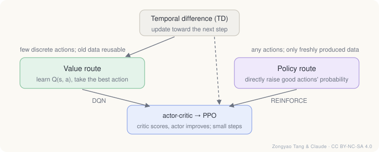

The thread: first a basic technique running through both routes, using "the estimate at the next step" to correct "the estimate at this step" → the first route learns value: learn to score each action, and act by the scores → the second route learns policy: adjust the policy itself directly → each has weaknesses, and combined they work best → finally, what today's most commonly used algorithm, PPO, adds on top of this.
Part 10 · Reinforcement learning (optional)10.2 Value and policy: two routes
Translated by AI (Anthropic's Claude) from the Chinese edition. The Chinese original is the reference.
This unit answersHow do you learn a good policy from "rewards obtained by trial and error"?
Follows the two concepts of value and policy from 10.1: starting from each of them gives the two routes.
- Temporal difference: no need to wait for the outcome; correct this step's estimate with the next step's
- The value route: learn to score each action, then pick the highest score
- The policy route: adjust the policy directly, making high-scoring actions appear more often
- Combining the two: one proposes, the other scores
- PPO: change the policy only a small step at a time
Explanation
1Temporal difference: no need to wait for the outcome; correct this step's estimate with the next step's
To learn a state's value, the most direct way is to play from it to the end, see how much return you actually get, and average over many repetitions. Temporal-difference (TD) learning does not wait for the end: it takes just one step, uses "the reward of this step + the estimated value of the next state" as the target, and moves the current state's estimate a little towards it.

This unit's route map: both routes use temporal difference, finally merging into actor-critic and PPO Two ways of estimating value.
*Play to the end (Monte Carlo).* Start from state s and play by the policy until the episode ends, noting the return actually received. Repeat many times and average, as the estimate of V(s).
- Advantage: it uses real outcomes, with no bias.
- Disadvantage: it can learn only after the episode ends; there are many random factors in one episode, a single return fluctuates a lot, and many episodes are needed to average out an accurate value.
*Temporal difference (TD).* The Bellman equation mentioned at the end of 10.1 says: V(s) should equal "the reward of this step + γ × the value of the next state". Take it as the learning target:
- In state s take an action, receive reward r, and arrive at state s′.
- Target = r + γ·V(s′), where V(s′) is the current estimate.
- Move V(s) a small step towards the target: V(s) ← V(s) + α × (target − V(s)).
The difference in brackets is called the TD error: "after taking this step, how much better (or worse) things turned out than I had estimated". It is the single most central signal in reinforcement learning.
Why this is right. The V(s′) in the target is only an estimate, but it "knows one step more" than V(s): it includes one real reward r. Every update injects a little real information. At the end of an episode, value is certain (it is just the final reward); this certain information is passed, update by update, step by step from the end back to every state.
Comparison.
Play to the end Temporal difference When it can learn After the episode ends After every step Target The real return One step's reward + an estimate Fluctuation Large Small Bias None Some (when estimates are inaccurate) In practice something in between is common: take n steps of real reward, then attach an estimate. n is a knob that adjusts between fluctuation and bias.
The hidden danger. "Updating an estimate with an estimate" is called bootstrapping. When the value function is represented by a neural network, updating one state's value also changes the values of neighbouring states, including the V(s′) used in the target. The target moves along with what is being learned, and the two may chase each other, drifting further and further, until they diverge. Sutton & Barto point out that it is most dangerous when three factors occur together: function approximation (neural networks), bootstrapping, and learning from data produced by a different policy. The book calls this the "deadly triad". The key techniques of DQN in the next card all exist to keep it steady.
The connection with part 1. You have seen the shape of this update: parameter ← parameter + step size × error. It is gradient descent, with the loss function "the square of the difference between the current estimate and the target". The difference is that in supervised learning the target is a fixed answer in the data, while here the target is computed by the model itself and keeps changing.
An analogyLike estimating how long the drive home takes: you need not wait until you are home to update the estimate. Leaving, you estimate 30 minutes; after 5 minutes you reach the motorway entrance and find a jam, and now estimate 40 minutes from here to home. Then "the estimate on leaving" should be corrected to 45 minutes. Home or not, you can correct it straight away.
So the agent learns something at every step, without waiting for an episode to end. The price is that it corrects one estimate with another, and early on both are inaccurate. There is an element of TD in almost every modern reinforcement learning algorithm.
Builds on Return, value, policy: three core conceptsAdam = momentum + a step size of its own for each parameterUsed later in The value route: learn to score each action, then pick the highest scoreCombining the two: one proposes, the other scoresSourcesSutton & Barto chapter 6: temporal-difference learningSutton & Barto §11.3: the deadly triad- With TD as a tool, the first route applies it to action values.
2The value route: learn to score each action, then pick the highest score
Q-learning learns the action value Q(s, a): taking action a in state s and then doing the best from there on, how much return is expected. Once it is learned, the policy comes ready-made: in each state choose the action with the largest Q. DQN represents Q with a neural network, taking the screen as input and outputting a score for each action, and was the first time one algorithm learned dozens of games from pixels.
The Q-learning update. Almost the same as the previous card's TD update, except that the object is Q, and the target takes "the best action in the next state":
- In state s take action a, receive reward r, arrive at s′.
- Target = r + γ × max Q(s′, a′), with the max taken over all possible actions in s′.
- Move Q(s, a) a step towards the target.
The max in the target means: whatever was actually done at the next step, estimate as if "the next step is done as well as possible". So what it learns is the Q of the optimal policy, not the Q of the current behaviour policy.
This brings an important property: off-policy. The data used for learning (s, a, r, s′) can come from anywhere: a policy exploring at random, an old policy from long ago, even records of a human playing. As long as it is a transition that really happened in the environment, it can be used to update Q.
This means data can be stored and reused again and again. 10.1 said the greatest cost in reinforcement learning is producing data, so this is very valuable.
DQN: representing Q with a neural network. When there are very many states (game screens have an astronomical number of possibilities), it is impossible to keep a separate value for each state. DQN uses a convolutional network: the input is the last few frames of the screen, the output the Q value of each action. The training loss is the square of the difference between "the network's output" and "the TD target".
Doing this directly is unstable (the deadly triad of the previous card). DQN adds two techniques:
- *Experience replay.* Store each step's transition in a very large buffer. At training time, sample a batch from it at random. There are two benefits: it breaks the strong correlation between neighbouring samples (consecutive frames are nearly identical, and training on them directly amounts to learning the same sample over and over); and each piece of data can be used many times.
- *A target network.* When computing the target, use an old copy of the Q network, synchronised from the current network only every so often. Then the target stays fixed for a while, and does not chase the network being updated.
In 2015 DQN, with one network structure and one set of hyperparameters, learned dozens of Atari games from screen pixels, beating human players in many of them. This was the starting point of deep reinforcement learning.
The limits of this route.
- *It has to take a max over actions.* With only a few or a few dozen actions, the network outputs the Q of every action at once and the maximum is simply taken. When actions are continuous (the torque of each of a robot's joints is a real number) or enormous in number (a language model's whole output), this max is itself a hard problem.
- *The policy is deterministic.* "Choose the largest Q" has no randomness, so exploration has to be added separately (ε-greedy).
- *Q values are easily overestimated.* The max systematically picks the actions that "were estimated too high", and the error snowballs. A series of improvements exists specifically to correct it.
So for continuous control and for language models, the mainstream is the other route, in the next card.
An analogyLike a food critic scoring every dish at every restaurant. Once the scores are accurate, ordering takes no thought: open the reviews and choose the dish with the highest score.
So in the value route the policy is "implicit" in Q. It has one important advantage: it can learn from data of any origin, including experience from long ago. But it requires taking a maximum over all actions, which works poorly when there are very many actions, or continuous ones.
Builds on Temporal difference: no need to wait for the outcome; correct this step's estimate with the next step'sExploration and exploitation: try something new, or use the best knownUsed later in The policy route: adjust the policy directly, making high-scoring actions appear more oftenExperience replay: store the data and use it again and againGames, recommendation, scheduling: a few classic application areasSourcesSutton & Barto §6.5 Q-learningDQN paper (Nature 2015): Human-level control through deep reinforcement learning- The value route takes a detour: first learn to score, then get behaviour from the scores. Can behaviour be learned directly?
3The policy route: adjust the policy directly, making high-scoring actions appear more often
Policy gradient methods do not learn "how much each action is worth"; they represent the policy directly as a network that outputs a probability for each action. The training method is plain: play a few episodes with the current policy; actions followed by high returns get their probability of being chosen raised; those followed by low returns get it lowered. Repeat.
The obstacle to overcome. As 10.1 said, rewards are given by the environment, the environment is a black box, and "reward with respect to action" cannot be differentiated. So how do you know which way to adjust the parameters?
The key switch. We do not differentiate the reward, but "the probability of the action". The policy network outputs a probability for each action, and this probability is differentiable with respect to the network's parameters. So there is a gradient that can actually be computed:
For each action actually taken: gradient = the return received after this action × the direction that "makes this action more probable"
Add this term up over all the actions in a batch of trajectories and average, and you have an estimate of "the gradient of expected return with respect to the parameters". This is what the policy gradient theorem says. It needs to know nothing about the environment's internal rules, only: what action was taken, and how much return came after it.
The comparison with supervised learning is illuminating. In the cross-entropy loss of part 1, the gradient points in the direction of "make the correct answer more probable". The policy gradient has exactly the same form, except that:
- there is no "correct answer"; in its place is "the action you actually sampled yourself";
- each term carries an extra weight in front: the return after this action.
So it can be understood like this: treat the actions you took as labels and do supervised learning, but weighted by how good the result was. Actions with good results are reinforced more; those with poor results less, or even (when the return is negative) suppressed.
This also explains why language models connect to reinforcement learning so easily: a language model outputs probabilities for the next token anyway, and is trained with cross-entropy anyway. Switching to policy gradient is, in code, just multiplying each sample's loss by a weight (10.4).
The most basic algorithm (REINFORCE). Repeat: play N episodes with the current policy; for each step work out the return after it; compute the gradient by the formula above; update the policy.
Drawback one: the signal is very noisy (high variance). The return of an episode is affected by many random factors: the environment's randomness, your own random choices over the hundreds of steps that follow. The same action, followed by a lucky run in this episode, gets a high return; followed by an unlucky run in the next, a low one. With such jittery numbers as weights, the direction of the gradient differs a lot each time, and many episodes have to be averaged before the true trend shows.
An improvement that works at once: use not the absolute value of the return but "the return minus a baseline". For example, if the average return over all episodes is 100, an action followed by 110 gets a weight of +10, one followed by 90 gets −10. This does not change the expected direction of the gradient, but the numbers are much smaller, both positive and negative, and the jitter drops greatly. What baseline is best leads into the next card.
Drawback two: data can be used only once (on-policy). This gradient estimate is valid only for "the policy that produced this batch of data". As soon as the policy is updated, the old data no longer applies, and the new policy has to play again. Compared with the value route, which can reuse old data again and again, it needs far more samples.
So the policy route is characterised by being widely applicable and conceptually direct, but hungry for samples and not stable enough. The next two cards each tackle one of the two sources of "not stable enough".
An analogyLike a chef improving their recipes: rather than scoring every technique precisely, they make a slightly different version each time by feel, use the techniques the customers responded well to a little more, and those they responded badly to a little less.
So it places no restriction at all on the form of actions: continuous ones and enormous numbers of them are both fine, as long as they can be sampled from the policy. The price is that it can use only the data the current policy has just produced, and its learning signal is very noisy, needing a great many samples.
Builds on The value route: learn to score each action, then pick the highest scoreThe loss function is not made up: it comes from maximum likelihoodThree differences from supervised learning: no correct answers, delayed rewards, self-produced dataUsed later in Combining the two: one proposes, the other scoresTraining reasoning ability: verifiable results as the rewardSourcesSutton & Barto §13.2: the policy gradient theoremSutton & Barto §13.3 REINFORCESpinning Up: Intro to Policy Optimization- The end of the previous card said that using "the return minus a baseline" greatly reduces noise. What is the best baseline? This question joins the two routes.
4Combining the two: one proposes, the other scores
Actor-critic methods train two networks at once. The actor is the policy, responsible for choosing actions. The critic is a value function, responsible for judging "how much this state is worth on average". When updating the actor, the weight is no longer the whole episode's return, but "how much better the action's actual result was than the critic expected", a quantity called the advantage.
What the baseline should be. What we want to know is: having chosen action a in state s, was it better or worse than "the average performance in s"? "The average performance in s" is exactly the state value V(s) defined in 10.1.
Advantage. A(s, a) = the return after doing a − V(s).
- Greater than zero: this action was better than average, and its probability should be raised.
- Less than zero: worse than average, and it should be lowered.
Using the advantage instead of the return as the weight in the policy gradient gives a much cleaner signal. The reason is that it removes the part unrelated to this action: if the state itself is very good (any action would score highly), a high return does not show that this action was good. After subtracting V(s), what remains is this action's own contribution. This is one solution to the credit assignment problem of 10.1.
Where the critic comes from. V(s) is unknown and has to be learned. So there is a second network, trained by the TD method of the first card: input a state, output a prediction of the return, and update towards "one step's reward + the prediction for the next state".
The critic can reduce noise further. "The return after doing a" can itself be estimated TD-style instead of using the whole episode's real return: r + γ·V(s′). Then the advantage is just the TD error of that step:
A ≈ r + γ·V(s′) − V(s)
This involves the randomness of only one step, so the noise is small; but it relies on the critic's estimate, and is biased when the critic is inaccurate. Practical algorithms take a compromise on "how many steps of real reward, and from which step to attach the critic's estimate"; one commonly used scheme is called generalised advantage estimation (GAE), adjusting between the two ends with one parameter. It is the same knob as "take n steps, then attach an estimate" in the first card.
The training loop.
- Use the actor (the current policy) to interact with the environment for a stretch, collecting data.
- Use the critic to work out the advantage of each step.
- Update the actor: the policy gradient weighted by advantage.
- Update the critic: make its prediction of the return more accurate.
- Repeat.
The two networks often share most of their earlier layers (both first have to "understand" the state), splitting into two outputs only at the end.
Against the big loop of 10.1. 10.1 said almost every algorithm alternates "evaluate the policy, improve the policy". Here it is plain to see: the critic is doing the evaluating, the actor the improving, both at once and gradually.
A summary of the two routes.
Value route (DQN family) Policy route (policy gradient family) Actor-critic What it learns The Q function The policy Policy + value Actions A few discrete ones Any Any Old data Can be reused again and again Cannot Generally cannot (some variants can) Stability Needs techniques Noisy Fairly good An analogyLike an actor and a director who knows the craft: after each scene, the director does not wait for the film's box office (the whole episode's return), but tells the actor on the spot "that scene was a bit above your usual standard" or "a bit below". The feedback is quick and precise.
So the critic's role is to give the actor a cleaner learning signal. Almost every practical policy gradient algorithm has this structure, including PPO in the next card, and the way language models are fine-tuned with reinforcement learning.
Builds on The policy route: adjust the policy directly, making high-scoring actions appear more oftenTemporal difference: no need to wait for the outcome; correct this step's estimate with the next step'sUsed later in PPO: change the policy only a small step at a time- Actor-critic reduced the noise. Policy gradient has a second source of instability, and PPO targets it.
5PPO: change the policy only a small step at a time
Policy gradient has a danger: one update changes the policy too much, the new policy's performance may suddenly collapse, and the data it produces is so poor that recovery is hard afterwards. PPO's way is to limit how large each update can be: the probability of the new policy choosing an action must not change too much relative to the old policy. The part beyond the range earns no further reward. With this limit, the same batch of data can safely be used several times.
The problem: too large a step has far more serious consequences than in supervised learning. In supervised learning, if one step goes wrong, the loss rises, and the next step with the same data brings it back. In reinforcement learning:
- The policy gradient estimate is reliable only near the current policy (the third card). Go too far, and the direction no longer stands for "getting better".
- Once the policy has got worse, the data it collects is bad too: a robot fallen on the ground collects nothing but data on "struggling on the ground", containing no information at all about how to walk.
- So a bad policy produces bad data, and bad data cannot train a good policy. The training curve suddenly drops off a cliff and never comes back up.
The "data produced by itself" of 10.1 shows its most dangerous side here.
A contradiction. Smaller steps avoid collapse, but samples are expensive (each batch of data can be used for only one small step before being thrown away and collected afresh). Can the same batch of data be used for several updates? Doing so directly amounts to one large step, back to the risk of collapse.
PPO's way. While updating, watch one quantity: for each action in the data, the probability of the new policy choosing it ÷ the probability of the old policy choosing it. A ratio of 1 means the policy has not changed at that point; the further from 1, the more it has changed.
PPO's objective is "ratio × advantage", but with the ratio clipped to a small range, say 0.8 to 1.2:
- For an action with positive advantage, raising its probability makes the objective larger. But once the ratio passes 1.2, raising it further brings no extra gain. So the optimiser has no incentive to push it further.
- Likewise for an action with negative advantage: once its probability has fallen to 0.8 times, it is pressed no further.
The effect: however many rounds of optimisation are done on this batch of data, the new policy stays "tethered" near the old one. So several rounds of updates can safely be done on the same batch, making fuller use of each expensive batch of data.
One full round.
- Collect a batch of data with the current policy (many parallel trajectories).
- Work out the advantages with the critic (previous card).
- Treat this batch of data as a small dataset, split it into small batches as in supervised learning and train for a few rounds, with the clipped function as the objective, training the critic at the same time.
- Throw the data away and go back to the first step.
Why it became the default choice.
- Before it there was a theoretically stricter method (TRPO), which also limits the size of updates, but requires solving a constrained optimisation problem and is complicated to implement. PPO achieves much the same effect with a simple clip, and can be trained with ordinary gradient descent and Adam.
- It is not sensitive to hyperparameters.
- It is naturally suited to parallelism: the collection in the first step can be shared among many environments at once (10.3).
Its weakness is still the common failing of on-policy methods: each batch of data must be thrown away after a few rounds, so it is hungry for samples. Where simulation is cheap (games, physics simulation) this is no problem; where every piece of data is expensive (real robots, data that needs human scoring), other ways have to be found.
This completes the main line of the algorithms. From TD, to the value route, to the policy route, to combining the two, and on to adding constraints for stability. The next unit takes another angle: what the system looks like when these algorithms run.
An analogyLike adjusting your habits when learning to drive: change only a little at a time, and carry on once you are sure it is fine. Change all your habits at once, and the next press of the pedal may well take you off the road, and because every stretch of road after that is driven badly, you learn nothing useful at all.
So PPO trades "steadiness" for "ease of use": simple to implement, not sensitive to hyperparameters, and giving decent results on all kinds of tasks. It is today's default reinforcement learning algorithm, and robot training and RLHF for language models mostly use it or its close relatives.
Builds on Combining the two: one proposes, the other scoresThe learning rate is the most important knob: warm up first, then decayThree differences from supervised learning: no correct answers, delayed rewards, self-produced data
Putting it together
Temporal difference lets the agent learn at every step without waiting for the outcome. The value route (Q-learning, DQN) learns "how much this action is worth in this state" and then picks the highest score; data can be reused again and again, but it suits only problems with few actions. The policy route directly raises the probability of good actions; it applies widely, but needs a great deal of fresh data and fluctuates a lot. Actor-critic uses a value function to give the policy's updates a steadier signal. PPO further limits how large each update can be, and gains stability in return.
Test yourself
Without looking back at the explanation, say it in your own words.
- How does temporal-difference learning update value estimates? What are its advantages and hidden dangers compared with "playing to the end and then counting"?
- What does Q-learning learn? How does it get a policy? What two key techniques did DQN use so that a neural network could learn Q stably?
- How does policy gradient work out "which way to adjust the policy" without knowing the environment's rules? What are its main drawbacks?
- What does each of the actor and the critic learn in actor-critic? What is the "advantage", and why is it better as a weight than the return?
- Why does too large a step in policy updates cause training to collapse? How does PPO limit the size of updates?